2 weeks
UX audit
I go through your product as a new user would and note everywhere it slows people down. You get a recorded walkthrough and a list of fixes, starting with the ones that matter most.
Work with me · UX research & strategy
Most teams I talk to already know something’s off. Sign-ups stall, people get lost during onboarding, or support keeps answering the same questions. The team usually has a few theories but no time to test them. That’s where I come in.
10 yrs
UX research and design at IBM, BMO, and XE
IBM
Enterprise Design Thinking certified
10,000+
Minutes mentoring designers, as an ADPList Top 100 Mentor
Figma
Official partner, through a design venture I co-founded
Fixed scope · Fixed price
2 weeks
I go through your product as a new user would and note everywhere it slows people down. You get a recorded walkthrough and a list of fixes, starting with the ones that matter most.
3–4 weeks
I interview your users and come back with what they need, where they get stuck, and what I’d build next.
Half or full day
Hands-on research and design training for your team, taught the same way I teach graduate students at TMU.
Your call
Have something else in mind? Tell me what you’re working on, and we’ll shape a scope that fits.
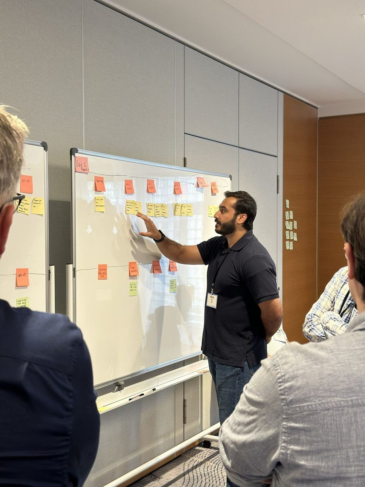
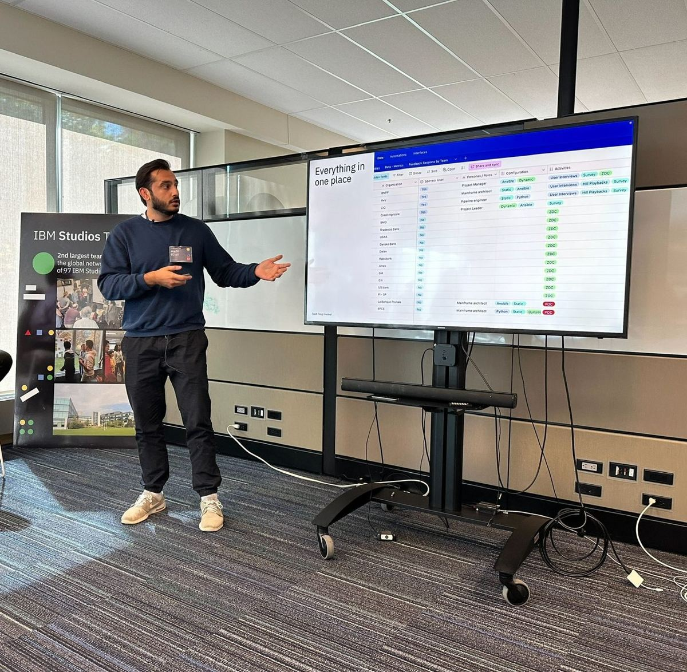
From Design XP apprentices
“What set Design XP apart was that the goal was never perfection of the end product, but developing your personal design process.”
“I feel like I’m becoming more confident in my skills and starting to see how design could actually shape my career.”
Experience at
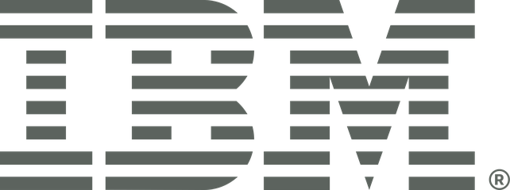
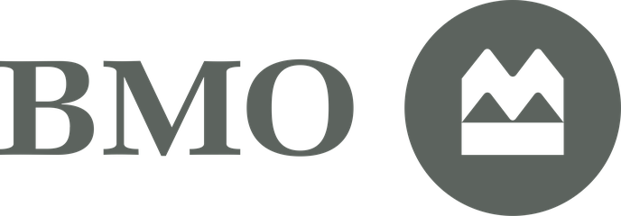
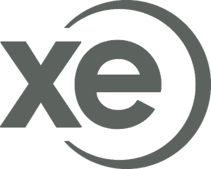
Selected work · 01
CESC supplies engineering and equipment for power systems, but had no website to support its sales conversations. Working directly with the CEO, I designed and built their site, including a white paper library where prospects can browse technical papers by topic. CESC now uses the site in discovery meetings to walk customers through its solutions, and we’re still in regular contact.
Visit cesc-consult.com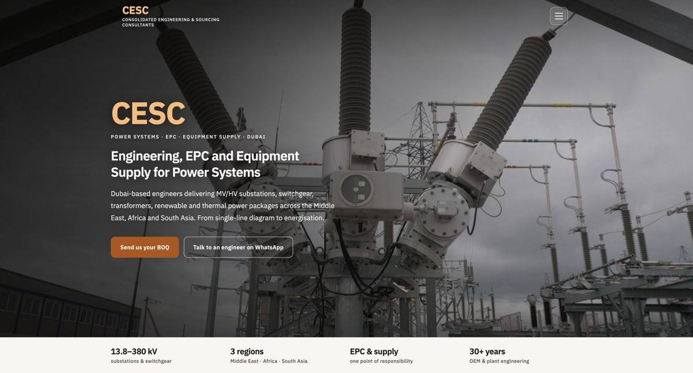
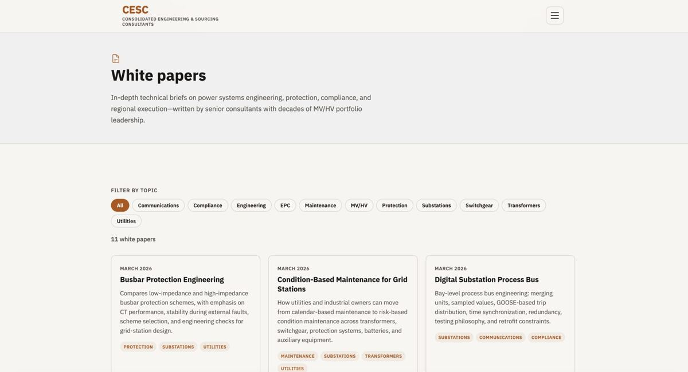
Selected work · 02
XE’s legacy experience split currency conversion, money transfers, and rate alerts into separate tools. I reviewed competitors, mapped the existing flows, and helped design one product with a single sign-in, a simpler path to sending money, and a shared component library. The visual design has kept evolving since, but that consolidated experience is still the foundation XE builds on.
Visit xe.com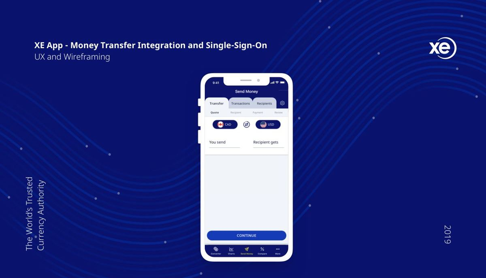
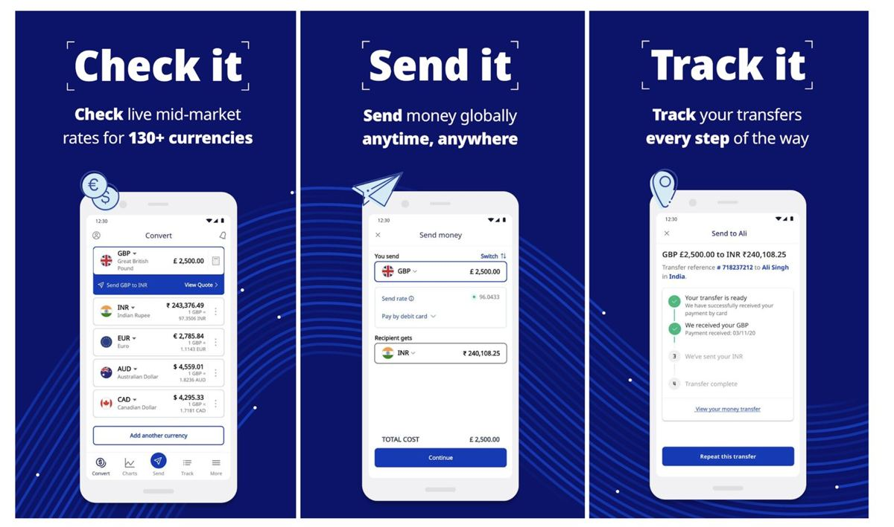
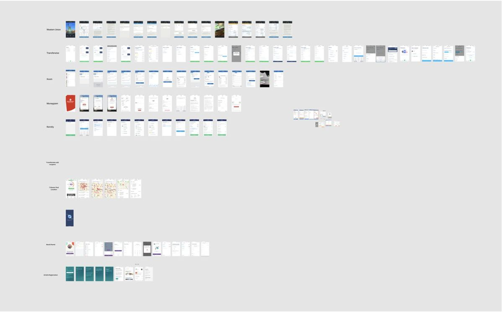
Selected work · 03
Conveyor AI was an IBM tool for creating your own AI systems. Our team took the existing work and rebuilt the experience around getting started, grounded in research into how people learn: guided tours and FAQs, contextual tips while exploring, and deeper use cases and documentation. The project has since been brought in-house at IBM, and its findings now shape other tools and experiences.
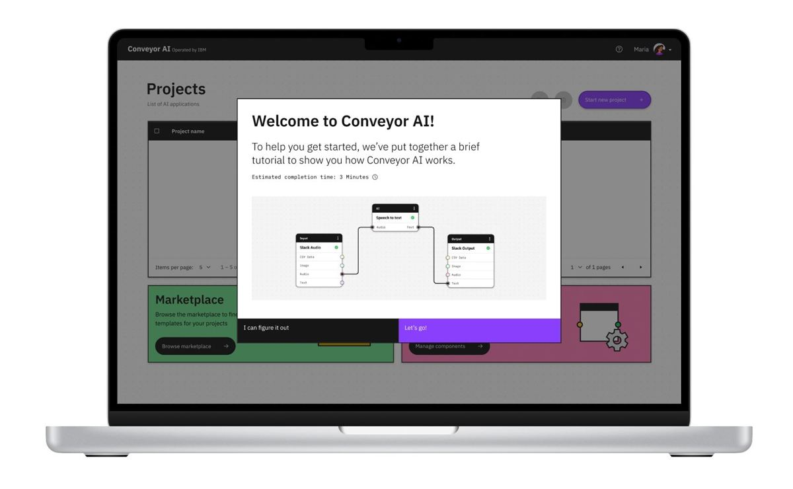
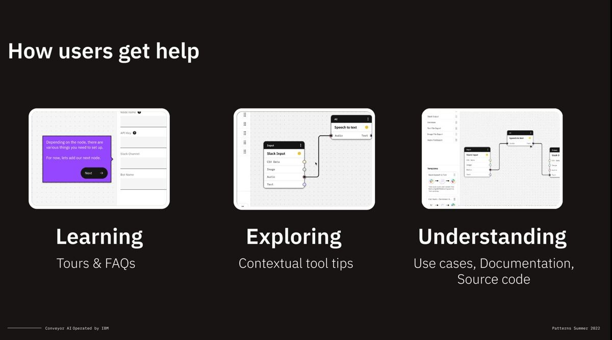
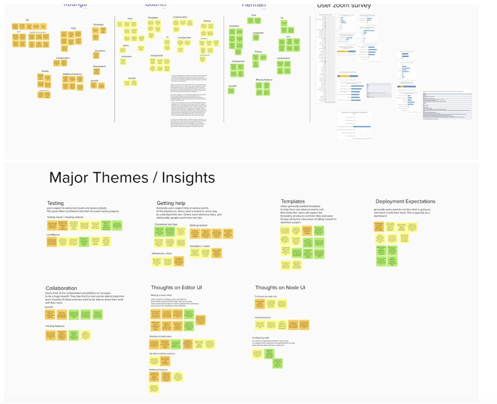
Selected work · 04
Espresso UI is a design library for freelancers and founders. Jacob and I led a team of Design XP apprentices through building it in Figma and translating it into code with Tailwind and shadcn.
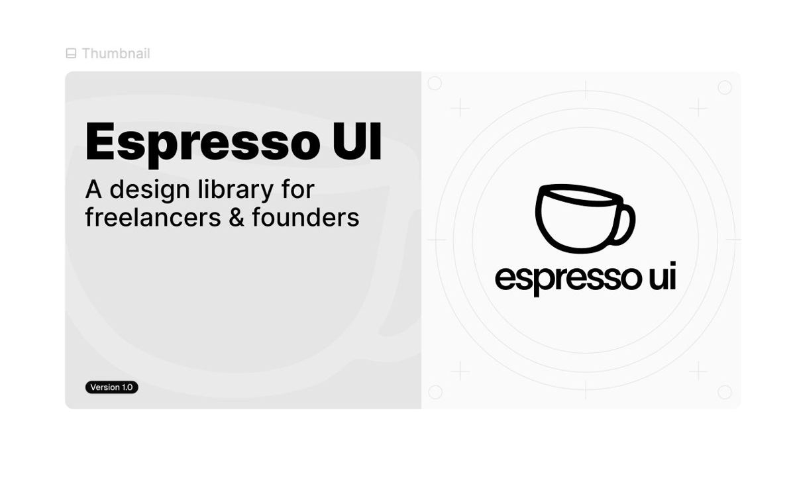
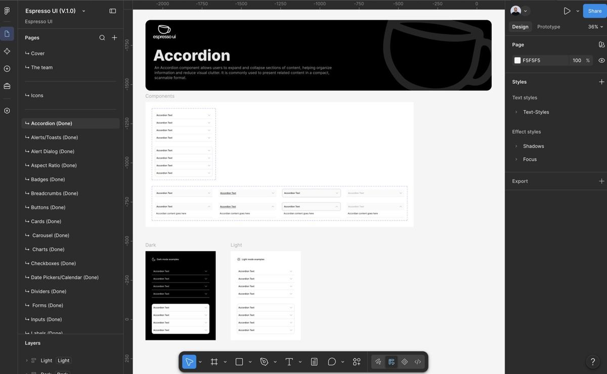
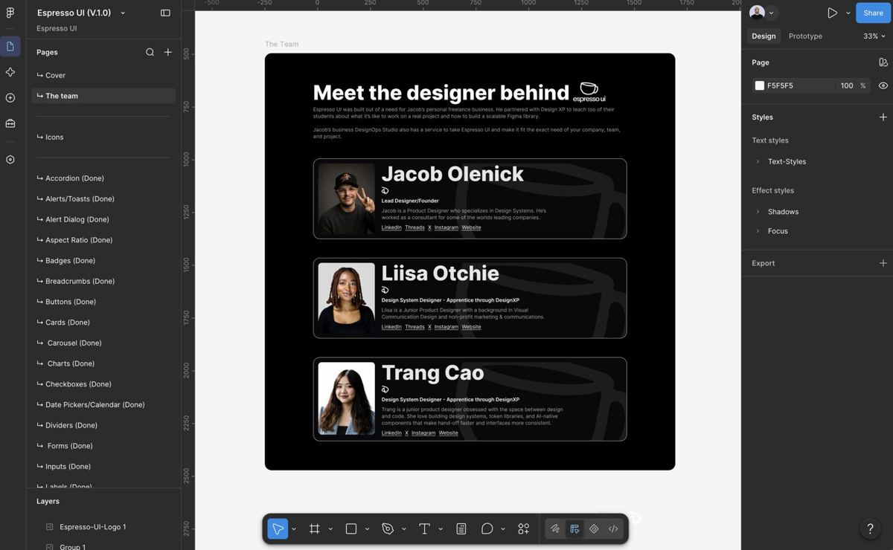
IBM research system
A research repository covering 46 enterprise clients, plus monthly customer advisory council sessions that keep product teams close to their users.
BMO
I helped lead the redesign of BMO’s Canadian desktop and mobile banking experiences from the research side, using card sorting, tree testing, interviews, and usability testing.
Huiscor
A website and digital experience for a power grid solutions company in Dubai.
Al Barwani Logistics
Digital work for an emerging logistics company in Oman.
Voice agent proof of concept
Through Design XP, I co-led a team of apprentices as they researched, designed, and delivered a proof of concept for a voice agent that helps a medical clinic in BC manage patient calls. Monstrum was the lead agency.
D&D app
Through Design XP, I led a team of apprentices and oversaw the research and design of an end-to-end experience for a Dungeons & Dragons app.
OKC Chesapeake Energy Arena
A digital donor recognition display for the NBA arena.
LA Philharmonic
A digital donor recognition display.
Carnival
A fitness and entertainment app.
Kalory Island
My Master of Digital Media thesis, exploring fitness and gamification.
Design XP
A 12-week UX apprenticeship I co-founded. I co-designed the website and built the curriculum and student experience, and we became an official Figma Partner.
Teaching
UX curriculum and courses for Toronto Metropolitan University, George Brown College, BrainStation, and Design XP.
How it starts
We talk through your product and goals. If it’s a good fit, I send a short proposal with a fixed scope and price.
Prefer email? m.aadilk96@gmail.com